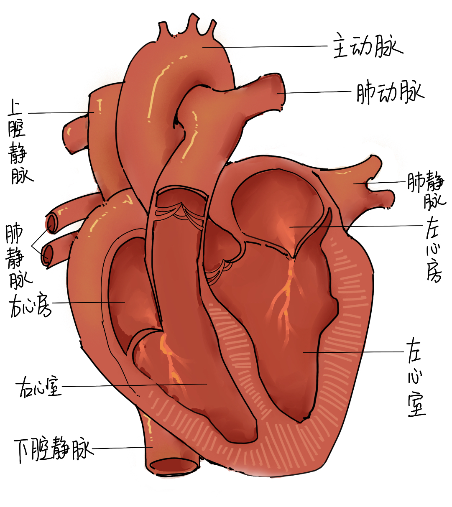
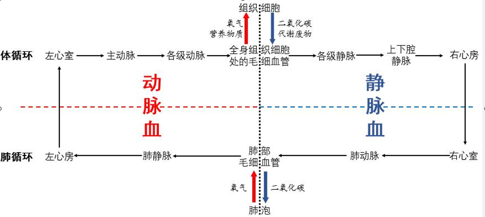

心脏
心脏是一个由肌肉组织组成的器官，是血液循环的动力器官。
瓣膜：分为房室瓣和动脉瓣，作用是防止血液倒流
答题时，需注意是否要区分静脉瓣和房室瓣
心房、心室与血管的连接（必背必考）
- 左心室→主动脉
- 右心室→肺动脉
- 左心房→肺静脉
- 右心房→上腔静脉和下腔静脉
心脏的工作过程
| 房室瓣 | 动脉瓣 | 血流方向 | |
| 左右心房收缩 | 开放 | 关闭 | 心房→心室 |
| 左右心室收缩 | 关闭 | 开放 | 心室→动脉 |
| 心房和心室均舒张 | 开放 | 关闭 | 静脉→心房 |
体循环与肺循环
体循环与肺循环是同时进行的。
路径
注意：肺动脉里留的是静脉血，肺静脉里留的是动脉血
跳转到下一个文档-安全输血 回到主页